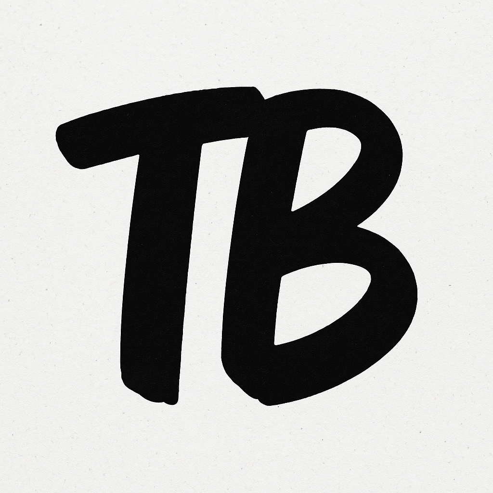

Apakah itu THRIFTBRO?
Selamat datang di THRIFT BRO, bukan sekadar tempat belanja thrift, tapi sebuah gerakan untuk membentuk gaya hidup baru: tampil maksimal dengan cara yang lebih cerdas dan bertanggung jawab. Kami percaya bahwa pakaian bukan hanya soal tren, tapi juga tentang identitas, kenyamanan, dan pilihan yang mencerminkan nilai.
Di balik tiap pakaian yang kami kurasi, ada komitmen untuk memberikan kamu produk berkualitas tinggi dengan harga yang bersahabat, tetap stylish tanpa merusak lingkungan. Itulah kenapa kami hadir dengan semangat:
Wear Better. Look Cleaner. Daily Wear. Basic Essentials.
Visi Kami Menjadi platform thrift terdepan di Indonesia yang menghadirkan produk berkualitas dan menciptakan kesadaran akan fashion yang berkelanjutan dan inklusif. Misi Kami Menghadirkan koleksi pakaian thrift yang bersih, layak pakai, dan stylish. Membangun komunitas fashion yang sadar lingkungan dan hemat biaya. Memberikan pengalaman berbelanja yang aman, mudah, dan terpercaya. Menyebarkan nilai bahwa barang bekas bukan barang murahan, tapi barang berharga yang menunggu kesempatan kedua.
Keunggulan Produk Kami
🧺 Ready to Wear - Produk kami tidak sekadar dijual ulang, tapi sudah dicuci, disetrika, dan dipastikan layak pakai. 🌿 Eco-Friendly - Setiap produk thrift yang kamu beli adalah satu langkah kecil menyelamatkan bumi dari limbah fashion. 📦 Stock Terbatas, Eksklusif! - Banyak produk hanya tersedia 1 pcs. Kalau kamu suka, langsung checkout, karena bisa saja kamu nggak bakal nemu lagi. 👟 Gaya Fleksibel - Cocok untuk kuliah, nongkrong, sampai kerja santai. Basic look yang selalu relevan dan bisa dikombinasikan sesuka kamu. 🧠 Thrift dengan Rasa Baru - Meskipun secondhand, kami percaya bahwa yang kami jual tetap punya jiwa dan nilai baru
Komunitas Kami
Kami percaya bahwa fashion adalah untuk semua. Lewat THRIFT BRO, kami membentuk komunitas pencinta thrift yang tidak hanya peduli pada penampilan, tapi juga peduli pada lingkungan, edukasi fashion, dan penguatan ekonomi lokal. Kamu bukan hanya pelanggan. Kamu adalah bagian dari pergerakan.
Kami percaya setiap baju punya cerita. Dan cerita itu nggak harus dimulai dari nol—kadang, cerita terbaik justru dimulai dari bekas orang lain. Jadi… Sudah siap tampil keren dengan cara yang beda? Gabung sekarang bersama THRIFT BRO. Look clean. Wear smart. Go thrift.